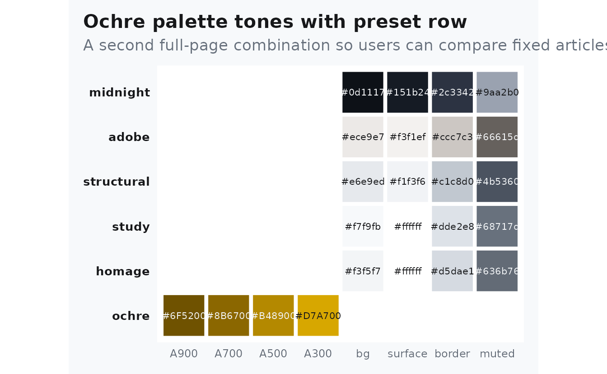
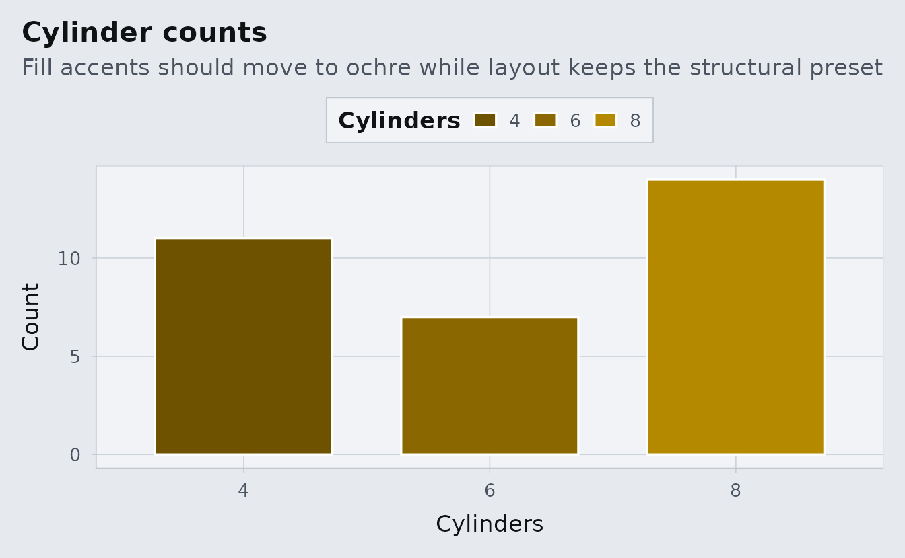

Theme Proof: Ochre + Structural
Source:vignettes/proof-ochre-structural.Rmd
proof-ochre-structural.RmdWhat To Look For
This proof page fixes the article to ochre plus
structural. The family should show up in links, section
dividers, plot highlights, and emphasis bands.
The preset should feel more architectural than study:
harder surfaces, flatter shadows, and a drier ground color behind the
same typography and layout system.
Palette Evidence
albersdown::albers_swatch(families = params$family, show_presets = TRUE) +
ggplot2::labs(
title = "Ochre palette tones with preset row",
subtitle = "A second full-page combination so users can compare fixed articles directly"
) +
ggplot2::theme(legend.position = "none")
Plot Evidence
counts <- as.data.frame(table(mtcars$cyl))
names(counts) <- c("cyl", "n")
ggplot(counts, aes(cyl, n, fill = cyl)) +
geom_col(width = 0.72, color = "white") +
albersdown::scale_fill_albers(family = params$family) +
labs(
title = "Cylinder counts",
subtitle = "Fill accents should move to ochre while layout keeps the structural preset",
x = "Cylinders",
y = "Count",
fill = "Cylinders"
)
Table Evidence
knitr::kable(
aggregate(cbind(mpg, wt, hp) ~ cyl, data = mtcars, FUN = mean),
digits = 1,
caption = "Grouped summary to inspect borders, spacing, and the overall preset mood."
)| cyl | mpg | wt | hp |
|---|---|---|---|
| 4 | 26.7 | 2.3 | 82.6 |
| 6 | 19.7 | 3.1 | 122.3 |
| 8 | 15.1 | 4.0 | 209.2 |